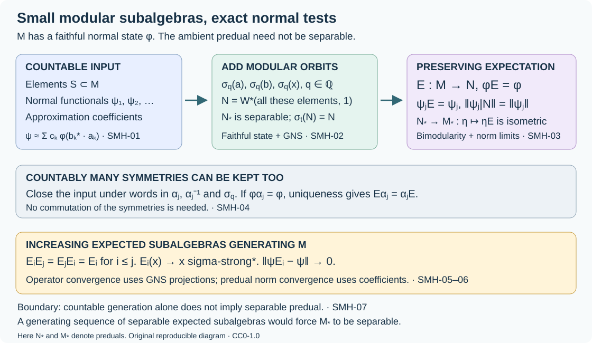
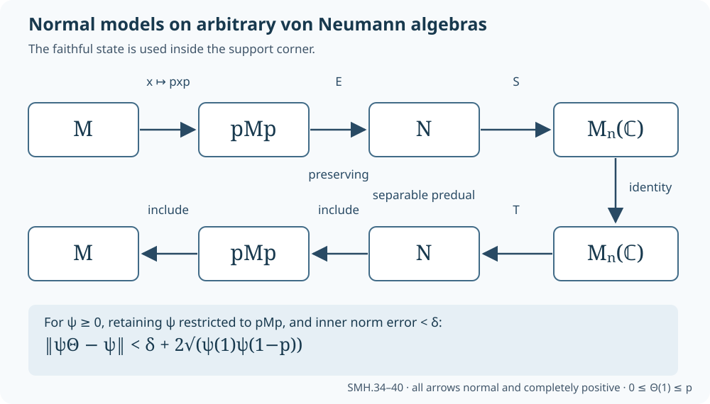
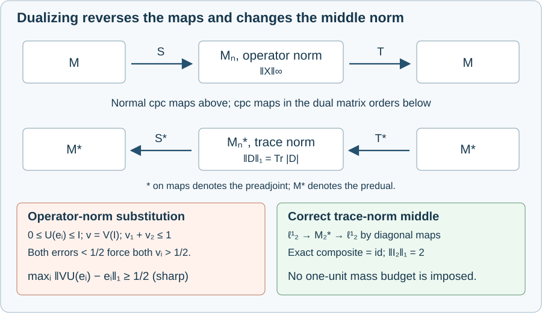

Separable modular subalgebras and preserving expectations
A von Neumann algebra with a faithful normal state can be much larger than any separable algebra. Nevertheless, countably many algebra elements and normal functionals fit inside a subalgebra with separable predual and a state-preserving normal expectation. Modular time is what makes this reduction possible.
We construct that subalgebra, retain countably many state-preserving symmetries, and prove convergence for increasing families of the resulting expectations in both operator and predual topologies. We then transfer normal finite matrix models through these expectations and through support corners, proving the reduction from arbitrary injective algebras to those with separable predual. The source comparison is the unnumbered reduction following Definition XV.3.5 on printed page 178 of Takesaki, Theory of Operator Algebras III, together with its corner-approximation argument on page 177. The separable injectivity and semidiscreteness theorem itself is a separate input to the reduction. Prescribed functionals, coherent expectations and quantitative predual estimates are proved below.
Normal functionals can be tested by state coefficients
Throughout, \(M\ne0\) is a von Neumann algebra with a faithful normal state \(\varphi\). Its faithful normal GNS representation is written on \(H_\varphi\), with cyclic vector \(\Omega\), so
\[ \varphi(x)=\langle x\Omega,\Omega\rangle,\qquad \|x\Omega\|^2=\varphi(x^*x). \tag{SMH.1} \]Inner products are linear in the first variable. The GNS construction for an arbitrary weight through Normality is a net argument constructs the GNS representation and proves its normality; faithfulness here follows from (SMH.1). The image of a faithful normal representation identifies its image with \(M\), including the intrinsic ultraweak and sigma-strong* topologies. No separability is assumed for \(M_*\) or \(H_\varphi\).
For \(a,b\in M\), define
\[ \omega_{a,b}(x)=\varphi(b^*xa)=\langle xa\Omega,b\Omega\rangle. \tag{SMH.2} \]This is normal and
\[ \|\omega_{a,b}\|\leq\|a\Omega\|\,\|b\Omega\|. \tag{SMH.3} \]Normality and the vector-functional description of the predual are proved in Every tensor vector is a summable vector series through The concrete predual and its intrinsic norm.
Coefficient density. The linear span of these functionals is norm dense in \(M_*\).
Indeed, let \(V\) be its norm closure. If \(V\ne M_*\), Hahn–Banach gives a nonzero continuous functional on \(M_*\) vanishing on \(V\). The isometric identification \(M=(M_*)^*\) in CP-06 writes it as evaluation at some \(x\ne0\). Thus \(\varphi(b^*xa)=0\) for all \(a,b\). Taking \(a=1,b=x\) gives \(\varphi(x^*x)=0\), contradicting faithfulness. This proves density.
Consequently, for every \(\psi\in M_*\) there are finite linear combinations \(v_k\) of the functionals (SMH.2) such that
\[ \|\psi-v_k\|<2^{-k}. \tag{SMH.4} \]Each individual \(\psi\) needs only countably many coefficient elements. A countable family of functionals still needs only countably many such elements. This is a statement about selected tests, not about a countable dense subset of the whole predual.
Closing countably many elements under modular time
Let \(S\subset M\) be countable. Write \(\sigma_t=\sigma_t^\varphi\) and set
\[ T_S=\{1\}\cup\{\sigma_q(x):x\in S,\ q\in\mathbb Q\}, \qquad N_S=W^*(T_S). \tag{SMH.5} \]The notation \(W^*\) includes the identity and adjoints. The modular fundamental theorem proves that \(\sigma_t\) is a normal automorphism, preserves \(\varphi\), and has sigma-strong* continuous orbits.
For \(x\in S\), \(q\in\mathbb Q\), and \(t\in\mathbb R\), choose rationals \(r_k\to t+q\). Then
\[ \sigma_t(\sigma_q(x))=\lim_k\sigma_{r_k}(x)\in N_S. \tag{SMH.6} \]The convergence is sigma-strong*, hence ultraweak on this norm-bounded orbit. Normality of \(\sigma_t\) now gives \(\sigma_t(N_S)\subset N_S\). Apply the same inclusion at \(-t\) to obtain equality. Thus \(N_S\) contains \(S\) and is invariant under the full real modular group.
Separable predual. We verify this conclusion rather than infer it from countable generation alone. Let \(A_S=C^*(T_S)\), and let \(\mathcal A_0\) be its countable set of star polynomials in \(T_S\) with rational complex coefficients. These polynomials are norm dense in \(A_S\). Hence
\[ K_S=\overline{A_S\Omega} \]is separable. The projection onto \(K_S\) commutes with \(A_S\): the subspace is invariant under every \(a\in A_S\) and its adjoint. It therefore commutes with \(A_S''=N_S\), by the bicommutant theorem Finite-vector approximation and the bicommutant. As \(1\in A_S\), we have \(\Omega\in K_S\), and
\[ K_S=\overline{N_S\Omega}. \tag{SMH.7} \]Restriction of the action to \(K_S\) is a faithful normal representation of \(N_S\). In fact, \(n|_{K_S}=0\) implies \(n\Omega=0\), hence \(n=0\). It is normal because restrictions preserve bounded increasing positive suprema. WH-02 makes its inverse on its image normal too.
Choose a countable dense subset of \(K_S\). Finite rational complex linear combinations of the vector functionals from pairs in this subset form a countable norm-dense subset of \((N_S)_*\). To check density, use CP-04–06 to express any normal functional in this faithful representation as an absolutely summable vector series, truncate that series, and approximate each of its finitely many vectors. The estimate
\[ \|\omega_{\xi,\eta}-\omega_{\xi',\eta'}\| \leq\|\xi-\xi'\|\,\|\eta\| +\|\xi'\|\,\|\eta-\eta'\| \tag{SMH.8} \]justifies the last approximation. This proves predual separability.
Since \(\varphi|_{N_S}\) is a faithful normal state, its semifiniteness is automatic. The modular expectation theorem The criterion and its exact setting through Compression produces a normal retraction and A preserving retraction is determined by its GNS projection gives the unique faithful normal conditional expectation
\[ E_S:M\longrightarrow N_S,\qquad \varphi E_S=\varphi. \tag{SMH.9} \]In this finite-state case preservation can also be read directly from ME-04's compression formula: its projection fixes \(\Omega\), so compression has the same \(\Omega\)-coefficient as \(x\). The expectation is unital, completely positive, contractive and \(N_S\)-bimodular.
The construction covers \(S=\varnothing\): then \(N_S=\mathbb C1\) and \(E_S(x)=\varphi(x)1\).
Retaining prescribed normal functionals exactly
Let \(S\subset M\) and \(\Psi\subset M_*\) be countable. For each \(\psi\in\Psi\), choose the approximations (SMH.4), and adjoin all their coefficient elements \(a,b\) to \(S\). Call the resulting countable set \(S'\). Apply SMH-02 to obtain \(N=N_{S'}\) and \(E=E_{S'}\).
For any coefficients \(a,b\in N\), bimodularity and state preservation give
\[ \omega_{a,b}(E(x)) =\varphi(b^*E(x)a) =\varphi(E(b^*xa)) =\omega_{a,b}(x). \tag{SMH.10} \]Every \(v_k\) chosen for a prescribed \(\psi\) is therefore fixed by composition with \(E\). Since \(\|E\|=1\),
\[ \|\psi E-\psi\| \leq \|(\psi-v_k)E\|+\|v_k-\psi\| \leq 2^{1-k}. \]Letting \(k\to\infty\) proves
\[ \psi E=\psi\qquad(\psi\in\Psi). \tag{SMH.11} \]Thus the functionals are retained exactly, even though their coefficient approximations were only norm approximations.
Let \(r:M_*\to N_*\) be restriction and \(j:N_*\to M_*\) be \(j(\eta)=\eta E\). Both maps are well defined by normality and are contractions. Since \(rj=\mathrm{id}_{N_*}\), \(j\) is an isometry. Its range is precisely
\[ j(N_*)=\{\psi\in M_*:\psi E=\psi\}. \tag{SMH.12} \]Indeed, an invariant \(\psi\) equals \((\psi|_N)E\), and every \(\eta E\) is invariant because \(E^2=E\). The composite \(jr\) is a contractive projection on \(M_*\). In particular,
\[ \|\psi|_N\|=\|\psi\|\qquad(\psi\in\Psi). \tag{SMH.13} \]Positivity and normalization of a prescribed normal state are also retained on restriction, since \(N\) has the same identity.
Keeping countably many state-preserving symmetries
Suppose in addition that \(\alpha_1,\alpha_2,\ldots\) are normal automorphisms of \(M\) satisfying \(\varphi\alpha_j=\varphi\). There is an \(N\) as in SMH-03 which is invariant under every \(\alpha_j\) and its inverse.
Start with the countable set \(S'\) of SMH-03. Apply to it all finite words in the countable collection of maps
\[ \{\sigma_q:q\in\mathbb Q\} \cup\{\alpha_j,\alpha_j^{-1}:j\geq1\}. \tag{SMH.14} \]There are countably many such words, so their images form a countable set \(T\). Put \(N=W^*(1,T)\). Normality of each automorphism shows that its image of \(N\) is generated by its images of \(T\). The word construction therefore gives invariance under all maps in (SMH.14); the rational-to-real limit (SMH.6) gives invariance under all \(\sigma_t\). The separability proof in SMH-02 applies unchanged. No commutation relation among the automorphisms was needed.
Let \(E:M\to N\) be the unique \(\varphi\)-preserving expectation. For any of the automorphisms \(\alpha=\alpha_j\), the map
\[ F=\alpha E\alpha^{-1} \]is a normal conditional expectation onto \(N\). It preserves \(\varphi\), because \(\varphi\alpha=\varphi\alpha^{-1}=\varphi\). Uniqueness in ME-08 yields \(F=E\), or
\[ E\alpha_j=\alpha_jE. \tag{SMH.15} \]The same argument applies to \(\sigma_t\). Moreover, all prescribed functionals in \(\Psi\) still satisfy (SMH.11), because their coefficients remain in \(N\).
This proves simultaneous reduction for the countable group generated by the \(\alpha_j\). It does not require the group to be abelian, and does not presume that an arbitrary automorphism preserves the chosen state.
A coherent directed family of expectations
Take all finite subsets \(S\subset M\), ordered by inclusion, with the specific subalgebras (SMH.5). If \(S\subset T\), then \(N_S\subset N_T\). Uniqueness of the preserving expectation proves the two tower identities
\[ E_SE_T=E_S,\qquad E_TE_S=E_S. \tag{SMH.16} \]For the first, \(E_SE_T\) is a normal unital contractive retraction onto \(N_S\) preserving \(\varphi\): it fixes \(N_S\) and its image lies there. ME-08 supplies uniqueness. The second identity follows because \(E_T\) fixes \(N_S\).
Let \(P_S\) be the orthogonal projection onto \(\overline{N_S\Omega}\). Then
\[ P_Sx\Omega=E_S(x)\Omega. \tag{SMH.17} \]Indeed, for \(n\in N_S\),
\[ \langle E_S(x)\Omega,n\Omega\rangle =\varphi(n^*E_S(x)) =\varphi(E_S(n^*x)) =\langle x\Omega,n\Omega\rangle. \]The vector on the left belongs to the projected subspace. This characterizes its orthogonal projection.
The projections increase, and their ranges have dense union: for every \(x\in M\), the set \(S=\{x\}\) already gives \(x\Omega\in P_SH_\varphi\). Consequently \(P_S\to1\) strongly. More strongly, each fixed algebra element is eventually unchanged:
\[ E_S(x)=x\qquad\hbox{whenever }S\supset\{x\}. \tag{SMH.18} \]Thus these subalgebras cover \(M\) as a directed union, with compatible expectations. The directed set may be uncountable. We have not produced a single separable subalgebra containing all of \(M\).
The same word construction gives a coherent family retaining a fixed countable set of functionals and symmetries: choose their coefficient set once, adjoin each finite \(S\), and then use (SMH.14). Inclusion of the initial finite sets still gives inclusion of the resulting subalgebras, so (SMH.16) remains valid.
Convergence for any increasing expected family
Here the algebras need not be the particular \(N_S\). Let \((N_i)\) be an increasing directed family of unital subalgebras, each invariant under \(\sigma^\varphi\), such that
\[ W^*\!\left(\bigcup_iN_i\right)=M. \tag{SMH.19} \]Let \(E_i\) be their preserving expectations. The preceding tower and projection arguments apply to them.
The closure \(K=\overline{\bigcup_iN_i\Omega}\) is all of \(H_\varphi\). To see this without assuming bounded approximating sequences, the union is a unital star algebra. The projection onto \(K\) commutes with that algebra, hence with \(M\) by (SMH.19) and the bicommutant theorem. Since it fixes \(\Omega\), it fixes the dense subspace \(M\Omega\). It is therefore \(1\). The increasing projections \(P_i\) now converge strongly to \(1\): approximate any vector by one in a single range and use the contraction bound for \(1-P_i\).
It follows that, for every \(x\in M\),
\[ \|(E_i(x)-x)\Omega\|\longrightarrow0,\qquad \|(E_i(x)^*-x^*)\Omega\|\longrightarrow0. \tag{SMH.20} \]The second assertion applies the first to \(x^*\), since positive maps preserve adjoints.
These are full strong* limits, not just tests at \(\Omega\). The vector \(\Omega\) is cyclic for \(M'\): the projection onto \(\overline{M'\Omega}\) belongs to \(M\), and its complement annihilates the separating vector \(\Omega\), so is zero. For \(y'\in M'\),
\[ \|(E_i(x)-x)y'\Omega\| \leq\|y'\|\,\|(E_i(x)-x)\Omega\|. \tag{SMH.21} \]The operators have norm at most \(2\|x\|\). Density of \(M'\Omega\) extends convergence to all vectors, and the same reasoning applies to the adjoints. On norm-bounded sets this is sigma-strong* convergence: for a square-summable family of test vectors, control a finite initial part and then the uniformly bounded tail. WH-02 transports this intrinsic topology to any faithful normal representation. Thus
\[ E_i(x)\longrightarrow x\quad\hbox{sigma-strong*}. \tag{SMH.22} \]There is also norm convergence on the whole predual:
\[ \|\psi E_i-\psi\|\longrightarrow0 \qquad(\psi\in M_*). \tag{SMH.23} \]For a proof, first observe that coefficients \(\omega_{a,b}\) with \(a,b\in\bigcup_iN_i\) have norm-dense span in \(M_*\). By SMH-01 it suffices to approximate an arbitrary \(\omega_{a,b}\). Density of \(\bigcup_iN_i\Omega\) and the vector estimate (SMH.8) do exactly this, using directedness to put both approximating coefficients in one \(N_j\). Such a coefficient is fixed by composition with every \(E_i\), \(i\geq j\), by (SMH.10). For any finite linear combination \(v\) of these coefficients and all sufficiently large \(i\),
\[ \|\psi E_i-\psi\|\leq2\|\psi-v\|. \tag{SMH.24} \]Density proves (SMH.23). Pointwise ultraweak convergence by itself would not establish this norm conclusion; the coefficient argument supplies it.
If \((N_i)=(N_n)\) is a sequence and each \((N_n)_*\) is separable, then \(M_*\) must be separable. Each isometric image \(E_n^*((N_n)_*)\subset M_*\) is separable by SMH-03. Their countable union has a countable dense subset, and (SMH.23) says its closure is all \(M_*\). Thus a sequence with these properties cannot replace the directed construction in an algebra with nonseparable predual.
What the hypotheses prevent

The diagram distinguishes the countable input used for one subalgebra from the possibly uncountable directed family needed for all of \(M\). Its expectation arrow has domain \(M\) and range \(N\). The predual arrow goes in the opposite direction and is an isometry. The two convergence statements are proved separately in SMH-06.
One generator without a faithful normal state. Let \(I=[0,1]\), let \(H=\ell^2(I)\), and let \(h\delta_t=t\delta_t\). This is a bounded selfadjoint operator. If \(T\in B(H)\) commutes with \(h\), its matrix coefficients satisfy
\[ (s-t)\langle T\delta_t,\delta_s\rangle=0. \]Thus \(T\delta_t\) is a scalar multiple of \(\delta_t\) for each \(t\). The scalars are bounded, and density of finite-support vectors proves that \(T\) is diagonal. Hence
\[ \{h\}'=\ell^\infty(I),\qquad W^*(h)=\{h\}''=\ell^\infty(I). \tag{SMH.25} \]The second equality also uses that the diagonal algebra is its own commutant, by the same coordinate test with its one-coordinate projections.
Its normal coordinate states \(\delta_t\) satisfy \(\|\delta_s-\delta_t\|=2\) for \(s\ne t\): a diagonal contraction taking the values \(1,-1\) at the two coordinates attains the upper bound. The predual is therefore not separable. A separable metric space cannot contain an uncountable family with mutual distances at least \(2\), because disjoint radius-\(1/2\) balls would require distinct elements of a countable dense subset.
There is no faithful normal state on this algebra. For its orthogonal one-coordinate projections \(p_t\), any state has \(\sum_{t\in F}\varphi(p_t)\leq1\) for every finite \(F\). Only countably many of these nonnegative numbers can be positive: for each positive integer \(n\), at most \(n\) exceed \(1/n\). Faithfulness would require every one to be positive. This example shows precisely why the faithful-state GNS argument in SMH-02 cannot be replaced by “countably generated implies separable predual.”
Modular closure can enlarge a matrix subalgebra. In \(M_2(\mathbb C)\), let
\[ \rho=\begin{pmatrix}a&0\\0&1-a\end{pmatrix},\qquad 0<a<1,\quad a\ne\tfrac12,\qquad v=E_{12}+E_{21}. \]For \(\varphi(x)=\operatorname{Tr}(\rho x)\), the density formula for modular time gives
\[ \sigma_t^\varphi(v) =e^{itc}E_{12}+e^{-itc}E_{21}, \qquad c=\log\frac{a}{1-a}\ne0. \tag{SMH.26} \]The complete density calculation is A block model with infinite mass and arbitrarily fast modular motion, specialized to one finite block. Choose a rational \(q\) with \(\sin(qc)\ne0\), which exists by taking \(0<|qc|<\pi\). The two linear equations given by \(v\) and \(\sigma_q(v)\) recover \(E_{12},E_{21}\). Their products give the diagonal matrix units. Thus \(N_{\{v\}}=M_2\), although \(W^*(v)=\operatorname{span}\{1,v\}\) is abelian.
For the normalized trace, by contrast, modular time is trivial and the preserving expectation onto \(W^*(v)\) is
\[ E(x)=\tfrac12(x+vxv). \tag{SMH.27} \]Indeed this average is unital, positive, trace preserving, fixes exactly the commutant of \(v\), and that commutant is \(\operatorname{span}\{1,v\}\). The same average does not preserve the nontracial \(\varphi\): it sends \(E_{11}\) to \(1/2\), whose state value is \(1/2\ne a\). The invariant-subalgebra condition has real content even in two dimensions.
Solved checks and the exact reduction obtained
1. Countably many tests. If \(\Psi=\{\psi_1,\psi_2,\ldots\}\), choose the \(k\)-th approximation to \(\psi_j\) for every pair \((j,k)\). Each uses finitely many coefficients. Their union is countable because the pairs are countable. Equation (SMH.10) fixes every approximation, and the limit proves all equalities \(\psi_jE=\psi_j\) simultaneously.
2. Both tower identities. The identity \(E_TE_S=E_S\) uses only \(N_S\subset N_T\). The reverse order uses uniqueness and preservation of the same state. Two arbitrary projections with nested ranges need not have that reverse-order identity.
3. The finite-state compression. With \(P=P_{\overline{N\Omega}}\), the operator formula of ME-04 gives \(E(x)|_{P H_\varphi}=PxP|_{P H_\varphi}\). Since \(P\Omega=\Omega\), this immediately proves \(\varphi(E(x))=\varphi(x)\). This short argument is legitimate for the state here; it is not a substitute for the full infinite-weight preservation argument in ME-05–07.
4. A normal functional is retained with its norm. If \(\psi E=\psi\), restriction cannot increase its norm, while
\[ |\psi(x)|=|(\psi|_N)(E(x))| \leq\|\psi|_N\|\,\|x\|. \]Taking the supremum over contractions gives the reverse norm inequality. No positivity assumption on \(\psi\) is required.
5. An increasing sequence. If \(N_n\) generates \(M\), the argument in SMH-06 gives both (SMH.22) and (SMH.23). It does not require an operator-norm approximation of \(x\) by \(N_n\). Hilbert-space density and the uniform contractivity of the expectations are the exact ingredients.
6. The scalar seed. For \(S=\varnothing\), \(N_S=\mathbb C1\), \(P_S\) has range \(\mathbb C\Omega\), and \(E_S(x)=\varphi(x)1\). A prescribed functional \(\psi\) can be retained by this expectation exactly when \(\psi=\psi(1)\varphi\), as follows by evaluating \(\psi E_S\).
Normal finite matrix models
A normal finite matrix model for a von Neumann algebra \(A\) is a pair of completely positive contractions
\[ A\xrightarrow{S}M_n(\mathbb C)\xrightarrow{T}A, \qquad S\ \text{normal},\qquad \theta=TS. \tag{SMH.28} \]The range map \(T\) is automatically normal: a linear map on a finite-dimensional space is continuous for its unique Hausdorff vector-space topology, and every normal functional composed with \(T\) is continuous. Neither map is required to preserve the unit. We say that \(A\) has the approximation property here if such composites converge pointwise ultraweakly to \(\mathrm{id}_A\). This is the usual finite-matrix definition of semidiscreteness.
We first prove two useful forms of this property. The predual is the actual Banach predual of The concrete predual and its intrinsic norm; Positive functionals, closed cones and norm closure through The sigma-strong seminorms are vector seminorms proves the positive-functional and topology facts used below.
Topology lemma. Pointwise ultraweak approximation by (SMH.28) implies pointwise sigma-strong* approximation by the same net. It also implies that, for every finite \(\Psi\subset A_*\) and \(\varepsilon>0\), one normal finite matrix model satisfies
\[ \|\psi\theta-\psi\|<\varepsilon\qquad(\psi\in\Psi). \tag{SMH.29} \]Conversely, the finite-test property (SMH.29) implies the ultraweak approximation property. The model chosen in (SMH.29) may differ from the members of the original net.
Proof. A completely positive contraction \(\theta\) satisfies \(0\le\theta(1)\le1\). Apply its two-by-two amplification to the Gram matrix with rows and columns \(x,1\), and increase the bottom-right entry to \(1\). This gives
\[ \begin{pmatrix}\theta(x^*x)&\theta(x)^*\\ \theta(x)&1\end{pmatrix}\ge0, \qquad \theta(x)^*\theta(x)\le\theta(x^*x). \tag{SMH.30} \]The last assertion follows by testing at vectors \((\xi,-\theta(x)\xi)\). Consequently, for \(f\in A_*^+\),
\[ \begin{aligned} f((\theta_i(x)-x)^*(\theta_i(x)-x)) &\le f(\theta_i(x^*x)) -2\operatorname{Re}f(x^*\theta_i(x))\\ &\quad+f(x^*x)\longrightarrow0 . \end{aligned} \tag{SMH.31} \]Fixed multiplication preserves normal functionals, so the middle term has the indicated limit. Apply the same argument to \(x^*\). Positive maps preserve adjoints, and CP-08 identifies these two families of seminorms with the sigma-strong* topology.
For the norm assertion, the set of all composites (SMH.28) is convex. For finitely many models \((S_j,T_j)\) and \(t_j\ge0\), \(\sum_jt_j=1\), put \(n=\sum_jn_j\). With \(p_j\) the coordinate block projections in \(M_n\), define
\[ S(x)=\operatorname{diag}(S_1(x),\ldots,S_m(x)), \qquad T(z)=\sum_jt_jT_j(p_jzp_j). \tag{SMH.32} \]Each compressed block is identified with \(M_{n_j}\). Matrix positivity proves complete positivity of both maps; the block-diagonal norm and \(\|T(z)\|\le\sum_jt_j\|z\|=\|z\|\) prove contractivity. Normality of \(S\) follows coordinatewise. The composite is \(\sum_jt_j\theta_j\).
For a finite list \(\psi_1,\ldots,\psi_r\), the tuples \((\psi_1\theta,\ldots,\psi_r\theta)\) thus form a convex subset of \((A_*)^r\). Ultraweak approximation puts \((\psi_1,\ldots,\psi_r)\) in its weak closure: evaluating a coordinate at \(x\in A=(A_*)^*\) gives exactly the original convergence. If the tuple were outside the norm closure, the real Hahn–Banach separation theorem would strictly separate it from that convex set. The separating functional has the form
\[ (g_1,\ldots,g_r)\longmapsto \operatorname{Re}\sum_{j=1}^r g_j(a_j), \qquad a_j\in A, \tag{SMH.33} \]by predual duality. It is weakly continuous, contradicting weak closure. The full real separation argument is the NP2 input stated and linked in Real duals and the convex-closure consequence; here it is applied to the finite product Banach space \((A_*)^r\). This proves (SMH.29). The empty list requires no approximation constraint.
Conversely, direct the finite lists and positive tolerances by inclusion and decreasing tolerance, and select a model satisfying (SMH.29). For every fixed \(x,\psi\),
\[ |\psi(\theta(x)-x)|\le\|\psi\theta-\psi\|\,\|x\|\longrightarrow0. \]This is pointwise ultraweak convergence; (SMH.31) supplies the strong* conclusion. In the zero algebra, use the zero maps through \(M_1\). \(\square\)
Passing a model through a normal expectation
Suppose \(N\subset A\) is unital and \(E:A\to N\) is a normal conditional expectation. A model \(N\xrightarrow{S}M_n\xrightarrow{T}N\) gives the normal model
\[ A\xrightarrow{SE}M_n\xrightarrow{\iota T}A, \qquad \Theta=\iota\theta E, \tag{SMH.34} \]where \(\iota:N\hookrightarrow A\). Composition preserves complete positivity and contractivity. For \(\psi\in A_*\), restriction is normal and
\[ \|\psi\Theta-\psi\| \le \|(\psi|_N)\theta-\psi|_N\|+\|\psi E-\psi\|. \tag{SMH.35} \]Indeed, subtract \(\psi E=(\psi|_N)E\); the first difference is \(((\psi|_N)\theta-\psi|_N)E\), whose norm is at most the smaller-algebra norm since \(E\) is contractive.
Expected-subalgebra reduction. Suppose \(A\) has a faithful normal state and every finite set of normal functionals can be retained, as in SMH-03, by an expected subalgebra \(N\) with the approximation property. Then \(A\) has that property.
For a given finite \(\Psi\), SMH-03 gives \(\psi E=\psi\) for every selected \(\psi\). Choose a model on \(N\) satisfying (SMH.29) for all their restrictions. Equation (SMH.35) proves (SMH.29) on \(A\), and the topology lemma finishes the proof. Prescribed finite or countable algebra elements may be included when choosing \(N\), but are not needed for the predual estimate.
There is a second useful version: if an increasing family \(N_i\) satisfies SMH-06 and every \(N_i\) has the approximation property, then \(A\) does. Choose \(i\) making the second term of (SMH.35) smaller than \(\varepsilon/2\) simultaneously for a finite list, using (SMH.23); then make the first term smaller than \(\varepsilon/2\) by a model on that \(N_i\). A normal expectation is essential here: without normality, \(SE\) need not be a normal recording map.
Removing the faithful-state assumption by support corners
Now \(M\) is arbitrary, and no faithful normal state on \(M\) is assumed. For \(\omega\in M_*^+\), let \(s(\omega)\) be its support. Corners have exactly their inherited predual through Supports and the direction toward normal weights proves the exact corner predual, the identity \(\omega(x)=\omega(s(\omega)xs(\omega))\), and faithfulness on the support corner.
The set
\[ \mathcal P=\{s(\omega):\omega\in M_*^+\} \tag{SMH.36} \]is directed by the projection order, and \(p\uparrow1\) over \(\mathcal P\). To see directedness, support minimality gives
\[ s(\omega+\eta)=s(\omega)\vee s(\eta). \tag{SMH.37} \]In detail, \(\omega,\eta\le\omega+\eta\) forces their supports below \(s(\omega+\eta)\); conversely their join has null complement for both functionals and therefore for their sum. If the supremum of all these supports had nonzero complementary projection \(q\), a vector functional with \(\omega(q)>0\) would have support not below \(1-q\), a contradiction. Existence of the supremum and increasing strong convergence follow from bounded monotone convergence in BK-04, already used in CP-12. Every nonzero \(p\in\mathcal P\) has a faithful normal state on \(pMp\), obtained by normalizing its supporting functional.
Put \(C_p(x)=pxp\), and identify \(pMp\) with its inclusion in \(M\). These two maps are normal completely positive contractions, by the matrix compression test and CP-11. For every \(\psi\in M_*^+\),
\[ \|\psi-\psi C_p\| \le 2\sqrt{\psi(1)\psi(1-p)}\longrightarrow0. \tag{SMH.38} \]Indeed, \(x-pxp=(1-p)x+px(1-p)\). Positive-functional Cauchy–Schwarz bounds each summand's value by \(\|x\|\sqrt{\psi(1)\psi(1-p)}\): use \(x^*x\le\|x\|^2 1\) for the first and \(pxx^*p\le\|x\|^2p\) for the second. Taking the supremum over contractions proves the bound. Normality gives \(\psi(1-p)\to0\). CP-07 expresses every complex normal functional as a linear combination of four normal positive ones, so the norm convergence holds on all of \(M_*\).
Support-corner reduction. If every nonzero \(pMp\), \(p\in\mathcal P\), has the approximation property, then \(M\) does.
Choose \(p\) so that all compression errors for a given finite \(\Psi\subset M_*\) are below \(\varepsilon/2\). Choose a model \(\theta=TS\) on \(pMp\) so that \(\|(\psi|_{pMp})\theta-\psi|_{pMp}\|<\varepsilon/2\) for those restrictions. The composite
\[ \Theta=\iota_p\theta C_p,\qquad M\xrightarrow{SC_p}M_n\xrightarrow{\iota_pT}M \tag{SMH.39} \]is a normal finite matrix model and satisfies
\[ \|\psi\Theta-\psi\| \le \|(\psi|_{pMp})\theta-\psi|_{pMp}\| +\|\psi C_p-\psi\|<\varepsilon . \tag{SMH.40} \]The topology lemma now proves the full approximation property. A corner's unit is \(p\), so \(0\le\Theta(1)\le p\); the maps need not be unital in \(M\). Schwarz was proved for precisely these subunital maps. None of the projections needs to be central.
The precise injectivity reduction
For this paragraph, injectivity means the completely positive extension property: a completely positive map from an operator system in a unital C*-algebra into \(A\) extends to that C*-algebra with the same value at the common identity. No normality of that extension is imposed.
If \(A\) is injective, so is every corner \(pAp\). Include a given map into \(A\), extend it there, and compress the extension by \(p\). On the original operator system it still has the original value, and at the identity it has the original value in \(pAp\). Likewise, if \(E:A\to N\) is a conditional expectation and \(A\) is injective, extend into \(A\) and compose with \(E\); this proves injectivity of \(N\).
It follows that the assertion
\[ \text{every injective algebra with separable predual is semidiscrete} \tag{SMH.41} \]implies the same assertion for every von Neumann algebra. First cut an arbitrary injective \(M\) by the directed supports (SMH.36). Each nonzero corner is injective and has a faithful normal state. Within it, SMH-03 produces a separable expected subalgebra retaining any selected finite family of normal functionals. That subalgebra is injective, so the hypothesis (SMH.41) gives its models. The expected-subalgebra reduction gives models on the corner, and the support-corner reduction gives models on \(M\).
This proves the full reduction surrounding Definition XV.3.5; it does not use (SMH.41) as an already proved fact. The separable injectivity theorem is a separate input to that implication; the programme proof route below now identifies it precisely. The source's reduction therefore extends beyond the mere existence of a separable modular subalgebra, while imposing no extra global countability hypothesis.

The diagram's expectation is defined on \(pMp\), where a faithful normal state exists. The return inclusions retain that corner's unit \(p\). For a positive test \(\psi\), the two-stage construction gives the bound shown when the expectation retains \(\psi|_{pMp}\); general complex tests are handled by CP-07 and (SMH.40).
7. A proper corner cannot fix the whole unit. If \(p\ne1\), every model (SMH.39) has image in \(pMp\), hence cannot send \(1\) to \(1\). For positive \(\psi\), the missing mass is controlled by (SMH.38); it tends to zero as \(p\uparrow1\). Thus requiring every intermediate model to be unital in \(M\) would discard the construction that proves the arbitrary-algebra reduction.
8. Why strong convergence alone is not the predual argument. The proof of (SMH.29) uses finite-product convexity and real separation, and (SMH.35) and (SMH.40) are norm estimates on functionals. These supply the uniform bound over the entire operator unit ball. Pointwise estimates at each fixed operator alone do not supply that bound.
9. No normal extension was claimed. Injectivity passes to a corner by compressing a completely positive extension. Normality is instead required of the recording maps \(S\), the modular expectations \(E\), and the compressions \(C_p\). Their composition is normal even though an extension used only to prove injectivity may be nonnormal.
Dual matrix norms and a sharp obstruction
For a normal finite model \(M\xrightarrow{S}M_n\xrightarrow{T}M\), the maps on functionals run in the reverse direction:
\[ M_*\xrightarrow{T_*}M_n^*\xrightarrow{S_*}M_*, \qquad (TS)_*=S_*T_* . \tag{SMH.42} \]Here \(T_*(f)=fT\) and \(S_*(g)=gS\). Normality places their values in the indicated preduals. The middle space is the Banach dual of operator-norm matrices. Its positive matrix cones are the dual matrix orders: \([f_{ij}]\) is positive when \(x\mapsto[f_{ij}(x)]\) is completely positive. The complete dual-order proof D1 proves that these preadjoints are completely positive contractions and that the converse adjoint construction also preserves complete positivity. This uses the dual orders, without identifying them casually with the order on a matrix of density matrices.
Every functional on \(M_n\) is uniquely \(f_D(X)=\operatorname{Tr}(DX)\), with \(D_{ji}=f_D(e_{ij})\). If \(D=v|D|\) is its polar decomposition, diagonalizing \(|D|\) gives
\[ \begin{aligned} |f_D(X)| &=|\operatorname{Tr}(|D|Xv)|\\ &\le \|X\|\operatorname{Tr}|D|,\\ f_D(v^*)&=\operatorname{Tr}|D|. \end{aligned} \tag{SMH.43} \]The last equality uses \(v^*v\) equal to the support of \(|D|\), and trace cyclicity. The case \(D=0\) is immediate. Thus \(\|f_D\|=\|D\|_1=\operatorname{Tr}|D|\). This is the finite trace norm, not the ordinary matrix operator norm. The predual norm approximation established above by finite convex combinations is therefore a factorization through this trace-norm space. It is not a pointwise norm assertion for every unmodified ultraweakly approximating net.
Operator-norm obstruction. Put \(E=(\mathbb C^2)_*=\ell^1_2\), with positive coordinate vectors \(e_1,e_2\). For every \(n\ge1\) and positive contractions
\[ U:E\longrightarrow (M_n,\|\cdot\|_\infty), \qquad V:(M_n,\|\cdot\|_\infty)\longrightarrow E, \]one has
\[ \max_{i=1,2}\|VU(e_i)-e_i\|_1\ge\tfrac12. \tag{SMH.44} \]Indeed \(0\le U(e_i)\le I_n\). Write \(v=V(I_n)\ge0\). Then \(VU(e_i)\le v\), while contractivity gives \(v_1+v_2\le1\). If both errors were smaller than \(1/2\), their respective \(i\)-th coordinates would exceed \(1/2\). Hence both \(v_i>1/2\), a contradiction. The same argument with any proposed error \(\varepsilon\) says \(2(1-\varepsilon)\le1\). Positivity alone gives the obstruction, so completely positive maps cannot evade it by increasing \(n\).
The bound is sharp among positive contractions. At \(n=2\), take
\[ U(a,b)=\operatorname{diag}(a,b),\qquad V(X)=\tfrac12(X_{11},X_{22}). \tag{SMH.45} \]The first norm is \(\max(|a|,|b|)\le |a|+|b|\); the second is at most \(\|X\|_\infty\). Both maps are positive, and \(VU=\tfrac12\mathrm{id}_E\).
With the correct dual norm, there is instead an exact completely positive factorization. On the algebra \(\mathbb C^2\), diagonal inclusion \(S(a,b)=\operatorname{diag}(a,b)\) and diagonal extraction \(T(X)=(X_{11},X_{22})\) are unital completely positive contractions and satisfy \(TS=\mathrm{id}\). At every matrix level, diagonal inclusion is a star homomorphism and extraction takes two positive compressions, which proves these assertions directly. Their preadjoints consequently give an exact factorization of \(E\) through \(M_2^*\), by D1. In density coordinates these are diagonal inclusion and extraction with the trace norm. Now \(\|I_2\|_1=2\), so contractivity no longer imposes the false mass budget \(v_1+v_2\le1\).

The arrows and norms are exactly (SMH.42)–(SMH.45). Takesaki III, Theorem XV.3.1(iv), printed p.174, displays matrices as the middle predual space without spelling out this dual norm. The programme formulation makes the trace norm explicit. Equation (SMH.44) rules out the literal operator-norm interpretation.
Programme proofs for the whole injectivity section
The preceding reduction supplies one part of the argument. The following earlier programme lessons supply the other stated results, with their proofs at the locations shown. Read the finite models with normal recording maps and the predual models with dual matrix norms. The links are to mathematical proofs within the programme; the human source locators identify the results being treated.
| Takesaki III, XV.3 | Result and exact programme proof |
|---|---|
| Theorem 3.1, pp.173–174; proof pp.175–178,183–185 | The four conditions are injectivity, bounded commutant multiplication for the minimal tensor norm, normal cpc matrix approximation in the pointwise sigma-strong* topology, and predual pointwise norm approximation through \(M_n^*\). Finite models, Lemma 1.1, Theorem 2.1, Lemma 2.2, D1–D2, Theorem 3.1 and Theorem 4.2 prove the approximation equivalences and the extension implication. Averaging, Theorem 4.1 and Corollary 4.2 supply injectivity to semidiscreteness for arbitrary algebras. The predual norm qualification is proved above. |
| Proposition 3.2, p.174 | Amplification Proposition 1.1, opposite Lemma 1.2, commutant Theorem 1.3 and the following coordinate-retraction product proof give arbitrary von Neumann products, arbitrary Hilbert-space amplifications and commutants in every faithful normal representation. The direct retractions avoid using the equivalence being proved. |
| Theorem 3.3, p.175 | Nuclear biduals, Proposition 2.1, Lemma 1.1 and Theorem 3.1 prove \(A\) nuclear iff \(A^{**}\) injective, including nonunital \(A\). The dilation retraction uses an approximate identity, and the cyclic representations are assembled by finite central covers. |
| Corollary 3.4, p.175 | Nuclear biduals, Proposition 4.1 constructs the normal central splitting by an ideal; Theorem 4.2 then proves nuclearity of \(A\) iff both the closed ideal and quotient are nuclear. The splitting is in the bidual. |
| Definition 3.5, p.178 | Semidiscreteness is the normal finite-model property used in (SMH.28), equivalently the commutant and dual-norm conditions above. The unnumbered reduction, pp.177–178, is proved in SMH-01–08, including all support corners and normal-functional norm tests. |
| Proposition 3.6, p.178 | Averaging, Proposition 5.3 builds each type I central summand as a corner of an amplification of an abelian algebra, then assembles arbitrary central families. This proves injectivity and semidiscreteness without countability restrictions. |
| Definition 3.8, p.179 | A hypertrace on \(A\subseteq B(H)\) is a state \(\rho\) on \(B(H)\) satisfying \(\rho(ax)=\rho(xa)\) for \(a\in A,x\in B(H)\). Hypertraces, Proposition 2.2 constructs one extending a prescribed faithful normal trace for a finite injective algebra. |
| Lemma 3.9, pp.179–180 | Hypertraces, Lemmas 1.1–1.2 and Theorem 2.1 prove the nonzero finite-rank Følner projection estimate from a hypertrace. Spectral overlaps handle noncommuting densities; the unitary-to-general-element step and arbitrary Hilbert spaces are included. |
| Lemma 3.10, p.180 | Hypertraces, uniform averaging AVG, identity ALL and Lemma 3.1 show that sufficiently unitary-invariant states are close on a finite test set to their composition with the center-valued trace. Uniform averaging handles singular limit states as well as normal states. |
| Lemma 3.11, pp.181–182 | Hypertraces, fixed spatial estimate SC and Lemma 4.1 give the required normal central-state estimate, in fact with zero error for the selected trace. The faithful trace representation is fixed throughout. |
| Lemma 3.12, p.183 | Hypertraces, Theorem 4.2 proves the center-valued norm estimate by testing every normal central state and localizing near a spectral value, including complex central elements. |
| Lemma 3.13, pp.183–184 | Hypertraces, Theorem 5.1 constructs the normal finite matrix maps using product-vector states and a marginal cutoff. Proposition 5.2, central support construction SUP and Theorem 5.3 treat arbitrary finite injective algebras by central products. |
| Corollary 3.14, p.184 | Hypertraces, Lemmas 6.1–6.2 and Corollary 6.3 use finite projections and their directed finite sums. A projection is finite in the algebraic sense; it need not have finite Hilbert-space rank. The separate finite-trace corner construction gives the continuous-core application directly. |
| Lemma 3.15, pp.184–185 | Averaging, Theorem 4.1 treats every injective algebra, hence the type III case. The core trace and finite-trace corners give core models; Theorem 3.2 and its explicit coefficient-compression proof return models to \(M\). |
| Theorem 3.16, pp.185–186 | Averaging, Theorems 2.2–2.3 and Corollary 3.1 prove injectivity of fixed points and regular crossed products for an amenable locally compact group acting normally and point-ultraweakly continuously. The invariant-mean retraction need not be normal. |
Remark 3.7 explains the terminology and adds no separate mathematical obligation. There are no end exercises in this section before XV.4 starts on p.186. The table accounts for the fifteen numbered mathematical items and the separately recorded unnumbered reduction. The selected programme proofs have been read at the versions recorded with this edition. Their deeper inputs—including standard representations, tensor positivity, projection comparison and the full dual-weight construction—remain subject to recursive prerequisite review; this inventory does not certify that review as complete.
The modular subalgebra construction requires a faithful normal state, while the support-corner approximation reduction applies to arbitrary algebras. Neither produces a countable exhaustion of every predual. The exposition and editable SVGs are CC0-1.0 to the extent of rights held.